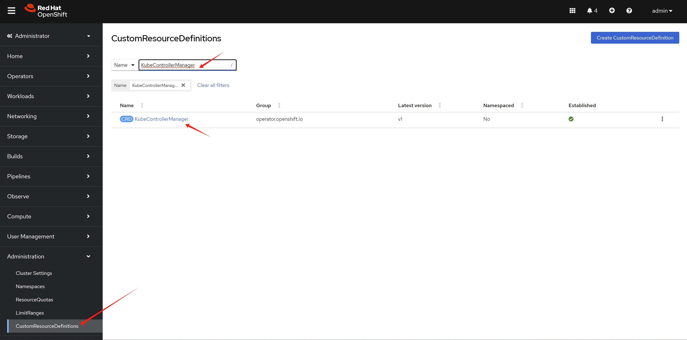
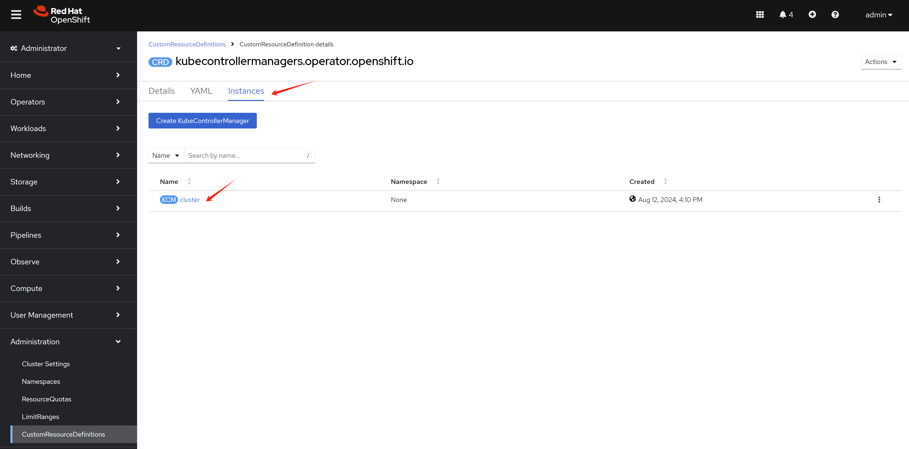

[!TIP] Ongoing and occasional updates and improvements.
apply settings belongs with worker profile
Openshift4 supports worker profile, which is a set of configurations that can be applied to the worker nodes. The worker profile contains some key parameters that can be adjusted to meet the specific requirements of the worker nodes. But the parameters is predefined, if you want to adjust the parameters, you need to find a way to do it.
- https://docs.openshift.com/container-platform/4.15/nodes/clusters/nodes-cluster-worker-latency-profiles.html
Openshift4 developers listed the cluster operator around the worker profile. This gives us a clue on how to do that.
- https://github.com/openshift/enhancements/blob/master/enhancements/worker-latency-profile/worker-latency-profile.md
[!WARNING] The method list in this doc, will break the supportability of your openshift cluster, like your cluster can not upgrade without rollback the configurations. Please use it with caution.
Contact with your redhat GPS, TAM, CEE or other redhat support team before apply the changes.
There is redhat cases about the same topic.
- https://access.redhat.com/support/cases/#/case/03903659
for KubeletConfig
Our target is to set the
node-status-update-frequency to 5s
Here is the official document to change the kubeletconfig.
- https://docs.openshift.com/container-platform/4.15/post_installation_configuration/machine-configuration-tasks.html#create-a-kubeletconfig-crd-to-edit-kubelet-parameters_post-install-machine-configuration-tasks
# before apply change, check on the worker node
cat /etc/kubernetes/kubelet.conf | grep node
# "nodeStatusUpdateFrequency": "10s",
# "nodeStatusReportFrequency": "5m0s",
oc get mcp
# NAME CONFIG UPDATED UPDATING DEGRADED MACHINECOUNT READYMACHINECOUNT UPDATEDMACHINECOUNT DEGRADEDMACHINECOUNT AGE
# master rendered-master-3b06c8a6cdbb7a48ab7c3f43f08990bd True False False 1 1 1 0 16d
# worker rendered-worker-eeb0c5ee23e3b38d342372cffde47bfb True False False 0 0 0 0 16d
oc get node
# NAME STATUS ROLES AGE VERSION
# master-01-demo Ready control-plane,master,worker 16d v1.28.11+add48d0
# label the machineconfigpool
oc label machineconfigpool master custom-kubelet=set-duration
# oc label machineconfigpool master custom-kubelet-
cat << EOF > ${BASE_DIR}/data/install/kubeletconfig-profile.yaml
apiVersion: machineconfiguration.openshift.io/v1
kind: KubeletConfig
metadata:
name: set-duration
spec:
machineConfigPoolSelector:
matchLabels:
custom-kubelet: set-duration
kubeletConfig:
nodeStatusUpdateFrequency: 5s
EOF
oc apply -f ${BASE_DIR}/data/install/kubeletconfig-profile.yaml
# oc delete -f ${BASE_DIR}/data/install/kubeletconfig-profile.yaml
# this will trigger ocp node reboot, after reboot,
# check node's kubelet.conf
cat kubelet.conf | grep node
# "nodeStatusUpdateFrequency": "5s",
# "nodeStatusReportFrequency": "5m0s",for KubeControllerManager
Our target is to set the
node-monitor-grace-period to 20s
Here is the kcs from redhat, tell us how to do it.
- https://access.redhat.com/solutions/5686011
# before apply patch, check the kube-controller-manager pod
POD_NAME=`oc get pod -n openshift-kube-controller-manager | grep kube-controller-manager | awk '{print $1}'`
oc exec -n openshift-kube-controller-manager $POD_NAME -- ps -ef
# UID PID PPID C STIME TTY TIME CMD
# root 1 0 6 00:56 ? 00:00:38 kube-controller-manager --openshift-config=/etc/kubernetes/static-pod-resources/configmaps/config/config.yaml --kubeconfig=/etc/kubernetes/static-pod-resources/configmaps/controller-manager-kubeconfig/kubeconfig --authentication-kubeconfig=/etc/kubernetes/static-pod-resources/configmaps/controller-manager-kubeconfig/kubeconfig --authorization-kubeconfig=/etc/kubernetes/static-pod-resources/configmaps/controller-manager-kubeconfig/kubeconfig --client-ca-file=/etc/kubernetes/static-pod-certs/configmaps/client-ca/ca-bundle.crt --requestheader-client-ca-file=/etc/kubernetes/static-pod-certs/configmaps/aggregator-client-ca/ca-bundle.crt -v=2 --tls-cert-file=/etc/kubernetes/static-pod-resources/secrets/serving-cert/tls.crt --tls-private-key-file=/etc/kubernetes/static-pod-resources/secrets/serving-cert/tls.key --allocate-node-cidrs=false --cert-dir=/var/run/kubernetes --cluster-cidr=10.132.0.0/14 --cluster-name=demo-01-rhsys-wkmd8 --cluster-signing-cert-file=/etc/kubernetes/static-pod-certs/secrets/csr-signer/tls.crt --cluster-signing-duration=720h --cluster-signing-key-file=/etc/kubernetes/static-pod-certs/secrets/csr-signer/tls.key --configure-cloud-routes=false --controllers=* --controllers=-bootstrapsigner --controllers=-tokencleaner --controllers=-ttl --enable-dynamic-provisioning=true --feature-gates=AdminNetworkPolicy=false --feature-gates=AlibabaPlatform=true --feature-gates=AutomatedEtcdBackup=false --feature-gates=AzureWorkloadIdentity=true --feature-gates=BuildCSIVolumes=true --feature-gates=CSIDriverSharedResource=false --feature-gates=CloudDualStackNodeIPs=true --feature-gates=ClusterAPIInstall=false --feature-gates=DNSNameResolver=false --feature-gates=DisableKubeletCloudCredentialProviders=false --feature-gates=DynamicResourceAllocation=false --feature-gates=EventedPLEG=false --feature-gates=ExternalCloudProviderAzure=true --feature-gates=ExternalCloudProviderExternal=true --feature-gates=ExternalCloudProviderGCP=true --feature-gates=GCPClusterHostedDNS=false --feature-gates=GCPLabelsTags=false --feature-gates=GatewayAPI=false --feature-gates=InsightsConfigAPI=false --feature-gates=InstallAlternateInfrastructureAWS=false --feature-gates=MachineAPIOperatorDisableMachineHealthCheckController=false --feature-gates=MachineAPIProviderOpenStack=false --feature-gates=MachineConfigNodes=false --feature-gates=ManagedBootImages=false --feature-gates=MaxUnavailableStatefulSet=false --feature-gates=MetricsServer=false --feature-gates=MixedCPUsAllocation=false --feature-gates=NetworkLiveMigration=true --feature-gates=NodeSwap=false --feature-gates=OnClusterBuild=false --feature-gates=OpenShiftPodSecurityAdmission=false --feature-gates=PrivateHostedZoneAWS=true --feature-gates=RouteExternalCertificate=false --feature-gates=SignatureStores=false --feature-gates=SigstoreImageVerification=false --feature-gates=VSphereControlPlaneMachineSet=false --feature-gates=VSphereStaticIPs=false --feature-gates=ValidatingAdmissionPolicy=false --flex-volume-plugin-dir=/etc/kubernetes/kubelet-plugins/volume/exec --kube-api-burst=300 --kube-api-qps=150 --leader-elect-renew-deadline=12s --leader-elect-resource-lock=leases --leader-elect-retry-period=3s --leader-elect=true --pv-recycler-pod-template-filepath-hostpath=/etc/kubernetes/static-pod-resources/configmaps/recycler-config/recycler-pod.yaml --pv-recycler-pod-template-filepath-nfs=/etc/kubernetes/static-pod-resources/configmaps/recycler-config/recycler-pod.yaml --root-ca-file=/etc/kubernetes/static-pod-resources/configmaps/serviceaccount-ca/ca-bundle.crt --secure-port=10257 --service-account-private-key-file=/etc/kubernetes/static-pod-resources/secrets/service-account-private-key/service-account.key --service-cluster-ip-range=172.22.0.0/16 --use-service-account-credentials=true --tls-cipher-suites=TLS_ECDHE_ECDSA_WITH_AES_128_GCM_SHA256,TLS_ECDHE_RSA_WITH_AES_128_GCM_SHA256,TLS_ECDHE_ECDSA_WITH_AES_256_GCM_SHA384,TLS_ECDHE_RSA_WITH_AES_256_GCM_SHA384,TLS_ECDHE_ECDSA_WITH_CHACHA20_POLY1305_SHA256,TLS_ECDHE_RSA_WITH_CHACHA20_POLY1305_SHA256 --tls-min-version=VersionTLS12
# root 47 0 0 01:04 pts/0 00:00:00 sh
# root 59 0 0 01:06 ? 00:00:00 ps -eflet’s see the parameters of kube-controller-manager clearly
kube-controller-manager –openshift-config=/etc/kubernetes/static-pod-resources/configmaps/config/config.yaml –kubeconfig=/etc/kubernetes/static-pod-resources/configmaps/controller-manager-kubeconfig/kubeconfig –authentication-kubeconfig=/etc/kubernetes/static-pod-resources/configmaps/controller-manager-kubeconfig/kubeconfig –authorization-kubeconfig=/etc/kubernetes/static-pod-resources/configmaps/controller-manager-kubeconfig/kubeconfig –client-ca-file=/etc/kubernetes/static-pod-certs/configmaps/client-ca/ca-bundle.crt –requestheader-client-ca-file=/etc/kubernetes/static-pod-certs/configmaps/aggregator-client-ca/ca-bundle.crt -v=2 –tls-cert-file=/etc/kubernetes/static-pod-resources/secrets/serving-cert/tls.crt –tls-private-key-file=/etc/kubernetes/static-pod-resources/secrets/serving-cert/tls.key –allocate-node-cidrs=false –cert-dir=/var/run/kubernetes –cluster-cidr=10.132.0.0/14 –cluster-name=demo-01-rhsys-wkmd8 –cluster-signing-cert-file=/etc/kubernetes/static-pod-certs/secrets/csr-signer/tls.crt –cluster-signing-duration=720h –cluster-signing-key-file=/etc/kubernetes/static-pod-certs/secrets/csr-signer/tls.key –configure-cloud-routes=false –controllers=* –controllers=-bootstrapsigner –controllers=-tokencleaner –controllers=-ttl –enable-dynamic-provisioning=true –feature-gates=AdminNetworkPolicy=false –feature-gates=AlibabaPlatform=true –feature-gates=AutomatedEtcdBackup=false –feature-gates=AzureWorkloadIdentity=true –feature-gates=BuildCSIVolumes=true –feature-gates=CSIDriverSharedResource=false –feature-gates=CloudDualStackNodeIPs=true –feature-gates=ClusterAPIInstall=false –feature-gates=DNSNameResolver=false –feature-gates=DisableKubeletCloudCredentialProviders=false –feature-gates=DynamicResourceAllocation=false –feature-gates=EventedPLEG=false –feature-gates=ExternalCloudProviderAzure=true –feature-gates=ExternalCloudProviderExternal=true –feature-gates=ExternalCloudProviderGCP=true –feature-gates=GCPClusterHostedDNS=false –feature-gates=GCPLabelsTags=false –feature-gates=GatewayAPI=false –feature-gates=InsightsConfigAPI=false –feature-gates=InstallAlternateInfrastructureAWS=false –feature-gates=MachineAPIOperatorDisableMachineHealthCheckController=false –feature-gates=MachineAPIProviderOpenStack=false –feature-gates=MachineConfigNodes=false –feature-gates=ManagedBootImages=false –feature-gates=MaxUnavailableStatefulSet=false –feature-gates=MetricsServer=false –feature-gates=MixedCPUsAllocation=false –feature-gates=NetworkLiveMigration=true –feature-gates=NodeSwap=false –feature-gates=OnClusterBuild=false –feature-gates=OpenShiftPodSecurityAdmission=false –feature-gates=PrivateHostedZoneAWS=true –feature-gates=RouteExternalCertificate=false –feature-gates=SignatureStores=false –feature-gates=SigstoreImageVerification=false –feature-gates=VSphereControlPlaneMachineSet=false –feature-gates=VSphereStaticIPs=false –feature-gates=ValidatingAdmissionPolicy=false –flex-volume-plugin-dir=/etc/kubernetes/kubelet-plugins/volume/exec –kube-api-burst=300 –kube-api-qps=150 –leader-elect-renew-deadline=12s –leader-elect-resource-lock=leases –leader-elect-retry-period=3s –leader-elect=true –pv-recycler-pod-template-filepath-hostpath=/etc/kubernetes/static-pod-resources/configmaps/recycler-config/recycler-pod.yaml –pv-recycler-pod-template-filepath-nfs=/etc/kubernetes/static-pod-resources/configmaps/recycler-config/recycler-pod.yaml –root-ca-file=/etc/kubernetes/static-pod-resources/configmaps/serviceaccount-ca/ca-bundle.crt –secure-port=10257 –service-account-private-key-file=/etc/kubernetes/static-pod-resources/secrets/service-account-private-key/service-account.key –service-cluster-ip-range=172.22.0.0/16 –use-service-account-credentials=true –tls-cipher-suites=TLS_ECDHE_ECDSA_WITH_AES_128_GCM_SHA256,TLS_ECDHE_RSA_WITH_AES_128_GCM_SHA256,TLS_ECDHE_ECDSA_WITH_AES_256_GCM_SHA384,TLS_ECDHE_RSA_WITH_AES_256_GCM_SHA384,TLS_ECDHE_ECDSA_WITH_CHACHA20_POLY1305_SHA256,TLS_ECDHE_RSA_WITH_CHACHA20_POLY1305_SHA256 –tls-min-version=VersionTLS12
There is no node-monitor-grace-period in the
output, so we need to check the help, whether it is
supported.
oc exec -n openshift-kube-controller-manager $POD_NAME -- kube-controller-manager --help | grep node-monitor-grace-period
# --node-monitor-grace-period duration Amount of time which we allow running Node to be unresponsive before marking it unhealthy. Must be N times more than kubelet's nodeStatusUpdateFrequency, where N means number of retries allowed for kubelet to post node status. (default 40s)Yes, it is supported. Let’s manually patch the configuration


Apply the patch below.
apiVersion: operator.openshift.io/v1
kind: KubeControllerManager
metadata:
name: cluster
....
spec:
....
unsupportedConfigOverrides:
extendedArguments:
node-monitor-grace-period:
- "20s"After manually patch the config, check the kube-controller-manager pod again
oc exec -n openshift-kube-controller-manager $POD_NAME -- ps -ef
# UID PID PPID C STIME TTY TIME CMD
# root 1 0 3 01:14 ? 00:00:07 kube-controller-manager --openshift-config=/etc/kubernetes/static-pod-resources/configmaps/config/config.yaml --kubeconfig=/etc/kubernetes/static-pod-resources/configmaps/controller-manager-kubeconfig/kubeconfig --authentication-kubeconfig=/etc/kubernetes/static-pod-resources/configmaps/controller-manager-kubeconfig/kubeconfig --authorization-kubeconfig=/etc/kubernetes/static-pod-resources/configmaps/controller-manager-kubeconfig/kubeconfig --client-ca-file=/etc/kubernetes/static-pod-certs/configmaps/client-ca/ca-bundle.crt --requestheader-client-ca-file=/etc/kubernetes/static-pod-certs/configmaps/aggregator-client-ca/ca-bundle.crt -v=2 --tls-cert-file=/etc/kubernetes/static-pod-resources/secrets/serving-cert/tls.crt --tls-private-key-file=/etc/kubernetes/static-pod-resources/secrets/serving-cert/tls.key --allocate-node-cidrs=false --cert-dir=/var/run/kubernetes --cluster-cidr=10.132.0.0/14 --cluster-name=demo-01-rhsys-wkmd8 --cluster-signing-cert-file=/etc/kubernetes/static-pod-certs/secrets/csr-signer/tls.crt --cluster-signing-duration=720h --cluster-signing-key-file=/etc/kubernetes/static-pod-certs/secrets/csr-signer/tls.key --configure-cloud-routes=false --controllers=* --controllers=-bootstrapsigner --controllers=-tokencleaner --controllers=-ttl --enable-dynamic-provisioning=true --feature-gates=AdminNetworkPolicy=false --feature-gates=AlibabaPlatform=true --feature-gates=AutomatedEtcdBackup=false --feature-gates=AzureWorkloadIdentity=true --feature-gates=BuildCSIVolumes=true --feature-gates=CSIDriverSharedResource=false --feature-gates=CloudDualStackNodeIPs=true --feature-gates=ClusterAPIInstall=false --feature-gates=DNSNameResolver=false --feature-gates=DisableKubeletCloudCredentialProviders=false --feature-gates=DynamicResourceAllocation=false --feature-gates=EventedPLEG=false --feature-gates=ExternalCloudProviderAzure=true --feature-gates=ExternalCloudProviderExternal=true --feature-gates=ExternalCloudProviderGCP=true --feature-gates=GCPClusterHostedDNS=false --feature-gates=GCPLabelsTags=false --feature-gates=GatewayAPI=false --feature-gates=InsightsConfigAPI=false --feature-gates=InstallAlternateInfrastructureAWS=false --feature-gates=MachineAPIOperatorDisableMachineHealthCheckController=false --feature-gates=MachineAPIProviderOpenStack=false --feature-gates=MachineConfigNodes=false --feature-gates=ManagedBootImages=false --feature-gates=MaxUnavailableStatefulSet=false --feature-gates=MetricsServer=false --feature-gates=MixedCPUsAllocation=false --feature-gates=NetworkLiveMigration=true --feature-gates=NodeSwap=false --feature-gates=OnClusterBuild=false --feature-gates=OpenShiftPodSecurityAdmission=false --feature-gates=PrivateHostedZoneAWS=true --feature-gates=RouteExternalCertificate=false --feature-gates=SignatureStores=false --feature-gates=SigstoreImageVerification=false --feature-gates=VSphereControlPlaneMachineSet=false --feature-gates=VSphereStaticIPs=false --feature-gates=ValidatingAdmissionPolicy=false --flex-volume-plugin-dir=/etc/kubernetes/kubelet-plugins/volume/exec --kube-api-burst=300 --kube-api-qps=150 --leader-elect-renew-deadline=12s --leader-elect-resource-lock=leases --leader-elect-retry-period=3s --leader-elect=true --node-monitor-grace-period=20s --pv-recycler-pod-template-filepath-hostpath=/etc/kubernetes/static-pod-resources/configmaps/recycler-config/recycler-pod.yaml --pv-recycler-pod-template-filepath-nfs=/etc/kubernetes/static-pod-resources/configmaps/recycler-config/recycler-pod.yaml --root-ca-file=/etc/kubernetes/static-pod-resources/configmaps/serviceaccount-ca/ca-bundle.crt --secure-port=10257 --service-account-private-key-file=/etc/kubernetes/static-pod-resources/secrets/service-account-private-key/service-account.key --service-cluster-ip-range=172.22.0.0/16 --use-service-account-credentials=true --tls-cipher-suites=TLS_ECDHE_ECDSA_WITH_AES_128_GCM_SHA256,TLS_ECDHE_RSA_WITH_AES_128_GCM_SHA256,TLS_ECDHE_ECDSA_WITH_AES_256_GCM_SHA384,TLS_ECDHE_RSA_WITH_AES_256_GCM_SHA384,TLS_ECDHE_ECDSA_WITH_CHACHA20_POLY1305_SHA256,TLS_ECDHE_RSA_WITH_CHACHA20_POLY1305_SHA256 --tls-min-version=VersionTLS12
# root 102 0 0 01:18 ? 00:00:00 ps -efkube-controller-manager –openshift-config=/etc/kubernetes/static-pod-resources/configmaps/config/config.yaml –kubeconfig=/etc/kubernetes/static-pod-resources/configmaps/controller-manager-kubeconfig/kubeconfig –authentication-kubeconfig=/etc/kubernetes/static-pod-resources/configmaps/controller-manager-kubeconfig/kubeconfig –authorization-kubeconfig=/etc/kubernetes/static-pod-resources/configmaps/controller-manager-kubeconfig/kubeconfig –client-ca-file=/etc/kubernetes/static-pod-certs/configmaps/client-ca/ca-bundle.crt –requestheader-client-ca-file=/etc/kubernetes/static-pod-certs/configmaps/aggregator-client-ca/ca-bundle.crt -v=2 –tls-cert-file=/etc/kubernetes/static-pod-resources/secrets/serving-cert/tls.crt –tls-private-key-file=/etc/kubernetes/static-pod-resources/secrets/serving-cert/tls.key –allocate-node-cidrs=false –cert-dir=/var/run/kubernetes –cluster-cidr=10.132.0.0/14 –cluster-name=demo-01-rhsys-wkmd8 –cluster-signing-cert-file=/etc/kubernetes/static-pod-certs/secrets/csr-signer/tls.crt –cluster-signing-duration=720h –cluster-signing-key-file=/etc/kubernetes/static-pod-certs/secrets/csr-signer/tls.key –configure-cloud-routes=false –controllers=* –controllers=-bootstrapsigner –controllers=-tokencleaner –controllers=-ttl –enable-dynamic-provisioning=true –feature-gates=AdminNetworkPolicy=false –feature-gates=AlibabaPlatform=true –feature-gates=AutomatedEtcdBackup=false –feature-gates=AzureWorkloadIdentity=true –feature-gates=BuildCSIVolumes=true –feature-gates=CSIDriverSharedResource=false –feature-gates=CloudDualStackNodeIPs=true –feature-gates=ClusterAPIInstall=false –feature-gates=DNSNameResolver=false –feature-gates=DisableKubeletCloudCredentialProviders=false –feature-gates=DynamicResourceAllocation=false –feature-gates=EventedPLEG=false –feature-gates=ExternalCloudProviderAzure=true –feature-gates=ExternalCloudProviderExternal=true –feature-gates=ExternalCloudProviderGCP=true –feature-gates=GCPClusterHostedDNS=false –feature-gates=GCPLabelsTags=false –feature-gates=GatewayAPI=false –feature-gates=InsightsConfigAPI=false –feature-gates=InstallAlternateInfrastructureAWS=false –feature-gates=MachineAPIOperatorDisableMachineHealthCheckController=false –feature-gates=MachineAPIProviderOpenStack=false –feature-gates=MachineConfigNodes=false –feature-gates=ManagedBootImages=false –feature-gates=MaxUnavailableStatefulSet=false –feature-gates=MetricsServer=false –feature-gates=MixedCPUsAllocation=false –feature-gates=NetworkLiveMigration=true –feature-gates=NodeSwap=false –feature-gates=OnClusterBuild=false –feature-gates=OpenShiftPodSecurityAdmission=false –feature-gates=PrivateHostedZoneAWS=true –feature-gates=RouteExternalCertificate=false –feature-gates=SignatureStores=false –feature-gates=SigstoreImageVerification=false –feature-gates=VSphereControlPlaneMachineSet=false –feature-gates=VSphereStaticIPs=false –feature-gates=ValidatingAdmissionPolicy=false –flex-volume-plugin-dir=/etc/kubernetes/kubelet-plugins/volume/exec –kube-api-burst=300 –kube-api-qps=150 –leader-elect-renew-deadline=12s –leader-elect-resource-lock=leases –leader-elect-retry-period=3s –leader-elect=true –node-monitor-grace-period=20s –pv-recycler-pod-template-filepath-hostpath=/etc/kubernetes/static-pod-resources/configmaps/recycler-config/recycler-pod.yaml –pv-recycler-pod-template-filepath-nfs=/etc/kubernetes/static-pod-resources/configmaps/recycler-config/recycler-pod.yaml –root-ca-file=/etc/kubernetes/static-pod-resources/configmaps/serviceaccount-ca/ca-bundle.crt –secure-port=10257 –service-account-private-key-file=/etc/kubernetes/static-pod-resources/secrets/service-account-private-key/service-account.key –service-cluster-ip-range=172.22.0.0/16 –use-service-account-credentials=true –tls-cipher-suites=TLS_ECDHE_ECDSA_WITH_AES_128_GCM_SHA256,TLS_ECDHE_RSA_WITH_AES_128_GCM_SHA256,TLS_ECDHE_ECDSA_WITH_AES_256_GCM_SHA384,TLS_ECDHE_RSA_WITH_AES_256_GCM_SHA384,TLS_ECDHE_ECDSA_WITH_CHACHA20_POLY1305_SHA256,TLS_ECDHE_RSA_WITH_CHACHA20_POLY1305_SHA256 –tls-min-version=VersionTLS12
You can see the parameters now.
for KubeAPIServer
Our target is to set the
default-not-ready-toleration-seconds to
20s
# before apply patch, check the kube-controller-manager pod
POD_NAME=`oc get pod -n openshift-kube-apiserver | grep kube-apiserver | awk '{print $1}'`
oc exec -n openshift-kube-apiserver $POD_NAME -- ps -ef
# UID PID PPID C STIME TTY TIME CMD
# root 1 0 0 00:56 ? 00:00:00 watch-termination --termination-touch-file=/var/log/kube-apiserver/.terminating --termination-log-file=/var/log/kube-apiserver/termination.log --graceful-termination-duration=15s --kubeconfig=/etc/kubernetes/static-pod-resources/configmaps/kube-apiserver-cert-syncer-kubeconfig/kubeconfig -- hyperkube kube-apiserver --openshift-config=/etc/kubernetes/static-pod-resources/configmaps/config/config.yaml --advertise-address=192.168.50.23 -v=2 --permit-address-sharing
# root 19 1 93 00:56 ? 00:35:11 kube-apiserver --openshift-config=/etc/kubernetes/static-pod-resources/configmaps/config/config.yaml --advertise-address=192.168.50.23 -v=2 --permit-address-sharing
# root 63 0 0 01:33 ? 00:00:00 ps -ef
oc exec -n openshift-kube-apiserver $POD_NAME -- cat /etc/kubernetes/static-pod-resources/configmaps/config/config.yaml
# the output is a jsonLet’s see the configuration in detail
{
"admission": {
"pluginConfig": {
"PodSecurity": {
"configuration": {
"apiVersion": "pod-security.admission.config.k8s.io/v1",
"defaults": {
"audit": "restricted",
"audit-version": "latest",
"enforce": "privileged",
"enforce-version": "latest",
"warn": "restricted",
"warn-version": "latest"
},
"exemptions": {
"usernames": [
"system:serviceaccount:openshift-infra:build-controller"
]
},
"kind": "PodSecurityConfiguration"
}
},
"network.openshift.io/ExternalIPRanger": {
"configuration": {
"allowIngressIP": false,
"apiVersion": "network.openshift.io/v1",
"externalIPNetworkCIDRs": null,
"kind": "ExternalIPRangerAdmissionConfig"
},
"location": ""
},
"network.openshift.io/RestrictedEndpointsAdmission": {
"configuration": {
"apiVersion": "network.openshift.io/v1",
"kind": "RestrictedEndpointsAdmissionConfig",
"restrictedCIDRs": [
"10.132.0.0/14",
"172.22.0.0/16"
]
}
}
}
},
"apiServerArguments": {
"allow-privileged": [
"true"
],
"anonymous-auth": [
"true"
],
"api-audiences": [
"https://kubernetes.default.svc"
],
"audit-log-format": [
"json"
],
"audit-log-maxbackup": [
"10"
],
"audit-log-maxsize": [
"200"
],
"audit-log-path": [
"/var/log/kube-apiserver/audit.log"
],
"audit-policy-file": [
"/etc/kubernetes/static-pod-resources/configmaps/kube-apiserver-audit-policies/policy.yaml"
],
"authentication-token-webhook-config-file": [
"/etc/kubernetes/static-pod-resources/secrets/webhook-authenticator/kubeConfig"
],
"authentication-token-webhook-version": [
"v1"
],
"authorization-mode": [
"Scope",
"SystemMasters",
"RBAC",
"Node"
],
"client-ca-file": [
"/etc/kubernetes/static-pod-certs/configmaps/client-ca/ca-bundle.crt"
],
"enable-admission-plugins": [
"CertificateApproval",
"CertificateSigning",
"CertificateSubjectRestriction",
"DefaultIngressClass",
"DefaultStorageClass",
"DefaultTolerationSeconds",
"LimitRanger",
"MutatingAdmissionWebhook",
"NamespaceLifecycle",
"NodeRestriction",
"OwnerReferencesPermissionEnforcement",
"PersistentVolumeClaimResize",
"PersistentVolumeLabel",
"PodNodeSelector",
"PodTolerationRestriction",
"Priority",
"ResourceQuota",
"RuntimeClass",
"ServiceAccount",
"StorageObjectInUseProtection",
"TaintNodesByCondition",
"ValidatingAdmissionWebhook",
"ValidatingAdmissionPolicy",
"authorization.openshift.io/RestrictSubjectBindings",
"authorization.openshift.io/ValidateRoleBindingRestriction",
"config.openshift.io/DenyDeleteClusterConfiguration",
"config.openshift.io/ValidateAPIServer",
"config.openshift.io/ValidateAuthentication",
"config.openshift.io/ValidateConsole",
"config.openshift.io/ValidateFeatureGate",
"config.openshift.io/ValidateImage",
"config.openshift.io/ValidateOAuth",
"config.openshift.io/ValidateProject",
"config.openshift.io/ValidateScheduler",
"image.openshift.io/ImagePolicy",
"network.openshift.io/ExternalIPRanger",
"network.openshift.io/RestrictedEndpointsAdmission",
"quota.openshift.io/ClusterResourceQuota",
"quota.openshift.io/ValidateClusterResourceQuota",
"route.openshift.io/IngressAdmission",
"scheduling.openshift.io/OriginPodNodeEnvironment",
"security.openshift.io/DefaultSecurityContextConstraints",
"security.openshift.io/SCCExecRestrictions",
"security.openshift.io/SecurityContextConstraint",
"security.openshift.io/ValidateSecurityContextConstraints",
"storage.openshift.io/CSIInlineVolumeSecurity"
],
"enable-aggregator-routing": [
"true"
],
"enable-logs-handler": [
"false"
],
"endpoint-reconciler-type": [
"lease"
],
"etcd-cafile": [
"/etc/kubernetes/static-pod-resources/configmaps/etcd-serving-ca/ca-bundle.crt"
],
"etcd-certfile": [
"/etc/kubernetes/static-pod-resources/secrets/etcd-client/tls.crt"
],
"etcd-healthcheck-timeout": [
"9s"
],
"etcd-keyfile": [
"/etc/kubernetes/static-pod-resources/secrets/etcd-client/tls.key"
],
"etcd-prefix": [
"kubernetes.io"
],
"etcd-readycheck-timeout": [
"9s"
],
"etcd-servers": [
"https://192.168.50.23:2379",
"https://localhost:2379"
],
"event-ttl": [
"3h"
],
"feature-gates": [
"AdminNetworkPolicy=false",
"AlibabaPlatform=true",
"AutomatedEtcdBackup=false",
"AzureWorkloadIdentity=true",
"BuildCSIVolumes=true",
"CSIDriverSharedResource=false",
"CloudDualStackNodeIPs=true",
"ClusterAPIInstall=false",
"DNSNameResolver=false",
"DisableKubeletCloudCredentialProviders=false",
"DynamicResourceAllocation=false",
"EventedPLEG=false",
"ExternalCloudProvider=true",
"ExternalCloudProviderAzure=true",
"ExternalCloudProviderExternal=true",
"ExternalCloudProviderGCP=true",
"GCPClusterHostedDNS=false",
"GCPLabelsTags=false",
"GatewayAPI=false",
"InsightsConfigAPI=false",
"InstallAlternateInfrastructureAWS=false",
"MachineAPIOperatorDisableMachineHealthCheckController=false",
"MachineAPIProviderOpenStack=false",
"MachineConfigNodes=false",
"ManagedBootImages=false",
"MaxUnavailableStatefulSet=false",
"MetricsServer=false",
"MixedCPUsAllocation=false",
"NetworkLiveMigration=true",
"NodeSwap=false",
"OnClusterBuild=false",
"OpenShiftPodSecurityAdmission=false",
"PrivateHostedZoneAWS=true",
"RouteExternalCertificate=false",
"SignatureStores=false",
"SigstoreImageVerification=false",
"VSphereControlPlaneMachineSet=false",
"VSphereStaticIPs=false",
"ValidatingAdmissionPolicy=false"
],
"goaway-chance": [
"0"
],
"http2-max-streams-per-connection": [
"2000"
],
"kubelet-certificate-authority": [
"/etc/kubernetes/static-pod-resources/configmaps/kubelet-serving-ca/ca-bundle.crt"
],
"kubelet-client-certificate": [
"/etc/kubernetes/static-pod-certs/secrets/kubelet-client/tls.crt"
],
"kubelet-client-key": [
"/etc/kubernetes/static-pod-certs/secrets/kubelet-client/tls.key"
],
"kubelet-preferred-address-types": [
"InternalIP"
],
"kubelet-read-only-port": [
"0"
],
"kubernetes-service-node-port": [
"0"
],
"max-mutating-requests-inflight": [
"1000"
],
"max-requests-inflight": [
"3000"
],
"min-request-timeout": [
"3600"
],
"proxy-client-cert-file": [
"/etc/kubernetes/static-pod-certs/secrets/aggregator-client/tls.crt"
],
"proxy-client-key-file": [
"/etc/kubernetes/static-pod-certs/secrets/aggregator-client/tls.key"
],
"requestheader-allowed-names": [
"kube-apiserver-proxy",
"system:kube-apiserver-proxy",
"system:openshift-aggregator"
],
"requestheader-client-ca-file": [
"/etc/kubernetes/static-pod-certs/configmaps/aggregator-client-ca/ca-bundle.crt"
],
"requestheader-extra-headers-prefix": [
"X-Remote-Extra-"
],
"requestheader-group-headers": [
"X-Remote-Group"
],
"requestheader-username-headers": [
"X-Remote-User"
],
"send-retry-after-while-not-ready-once": [
"true"
],
"service-account-issuer": [
"https://kubernetes.default.svc"
],
"service-account-jwks-uri": [
"https://api.demo-01-rhsys.wzhlab.top:6443/openid/v1/jwks"
],
"service-account-lookup": [
"true"
],
"service-account-signing-key-file": [
"/etc/kubernetes/static-pod-certs/secrets/bound-service-account-signing-key/service-account.key"
],
"service-node-port-range": [
"30000-32767"
],
"shutdown-delay-duration": [
"0s"
],
"shutdown-send-retry-after": [
"true"
],
"storage-backend": [
"etcd3"
],
"storage-media-type": [
"application/vnd.kubernetes.protobuf"
],
"strict-transport-security-directives": [
"max-age=31536000,includeSubDomains,preload"
],
"tls-cert-file": [
"/etc/kubernetes/static-pod-certs/secrets/service-network-serving-certkey/tls.crt"
],
"tls-private-key-file": [
"/etc/kubernetes/static-pod-certs/secrets/service-network-serving-certkey/tls.key"
]
},
"apiVersion": "kubecontrolplane.config.openshift.io/v1",
"authConfig": {
"oauthMetadataFile": "/etc/kubernetes/static-pod-resources/configmaps/oauth-metadata/oauthMetadata"
},
"consolePublicURL": "",
"corsAllowedOrigins": [
"//127\\.0\\.0\\.1(:|$)",
"//localhost(:|$)"
],
"imagePolicyConfig": {
"internalRegistryHostname": "image-registry.openshift-image-registry.svc:5000"
},
"kind": "KubeAPIServerConfig",
"projectConfig": {
"defaultNodeSelector": ""
},
"serviceAccountPublicKeyFiles": [
"/etc/kubernetes/static-pod-resources/configmaps/sa-token-signing-certs",
"/etc/kubernetes/static-pod-resources/configmaps/bound-sa-token-signing-certs"
],
"servicesSubnet": "172.22.0.0/16",
"servingInfo": {
"bindAddress": "0.0.0.0:6443",
"bindNetwork": "tcp4",
"cipherSuites": [
"TLS_ECDHE_ECDSA_WITH_AES_128_GCM_SHA256",
"TLS_ECDHE_RSA_WITH_AES_128_GCM_SHA256",
"TLS_ECDHE_ECDSA_WITH_AES_256_GCM_SHA384",
"TLS_ECDHE_RSA_WITH_AES_256_GCM_SHA384",
"TLS_ECDHE_ECDSA_WITH_CHACHA20_POLY1305_SHA256",
"TLS_ECDHE_RSA_WITH_CHACHA20_POLY1305_SHA256"
],
"minTLSVersion": "VersionTLS12",
"namedCertificates": [
{
"certFile": "/etc/kubernetes/static-pod-certs/secrets/localhost-serving-cert-certkey/tls.crt",
"keyFile": "/etc/kubernetes/static-pod-certs/secrets/localhost-serving-cert-certkey/tls.key"
},
{
"certFile": "/etc/kubernetes/static-pod-certs/secrets/service-network-serving-certkey/tls.crt",
"keyFile": "/etc/kubernetes/static-pod-certs/secrets/service-network-serving-certkey/tls.key"
},
{
"certFile": "/etc/kubernetes/static-pod-certs/secrets/external-loadbalancer-serving-certkey/tls.crt",
"keyFile": "/etc/kubernetes/static-pod-certs/secrets/external-loadbalancer-serving-certkey/tls.key"
},
{
"certFile": "/etc/kubernetes/static-pod-certs/secrets/internal-loadbalancer-serving-certkey/tls.crt",
"keyFile": "/etc/kubernetes/static-pod-certs/secrets/internal-loadbalancer-serving-certkey/tls.key"
},
{
"certFile": "/etc/kubernetes/static-pod-resources/secrets/localhost-recovery-serving-certkey/tls.crt",
"keyFile": "/etc/kubernetes/static-pod-resources/secrets/localhost-recovery-serving-certkey/tls.key"
}
]
}
}there is no default-not-ready-toleration-seconds in the configuration
# confirm the parameter is not there.
oc exec -n openshift-kube-apiserver $POD_NAME -- cat /etc/kubernetes/static-pod-resources/configmaps/config/config.yaml | grep default-not-ready-toleration-seconds
# no output
# and kube-apiserver support the parameter
oc exec -n openshift-kube-apiserver $POD_NAME -- kube-apiserver --help | grep default-not-ready-toleration-seconds
# --default-not-ready-toleration-seconds int Indicates the tolerationSeconds of the toleration for notReady:NoExecute that is added by default to every pod that does not already have such a toleration. (default 300)Apply the patch below.
apiVersion: operator.openshift.io/v1
kind: KubeAPIServer
name: cluster
....
spec:
....
unsupportedConfigOverrides:
apiServerArguments:
default-not-ready-toleration-seconds:
- "20"And check the configuration again
# go back to check the configuration again, we can see the parameter now
oc exec -n openshift-kube-apiserver $POD_NAME -- cat /etc/kubernetes/static-pod-resources/configmaps/config/config.yaml | jq . | grep -A 2 default-not-ready-toleration-seconds
# "default-not-ready-toleration-seconds": [
# "20"
# ],